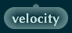

Skov est un système de programmation visuel basé sur Factor et inspiré par Lisp.
Un programme fonctionnel peut être pensé comme un arbre (en réalité un graphe) dans lequel des fonctions sont connectées entre elles sur plusieurs niveaux. Les langages de programmation couramment utilisés doivent faire plus ou moins de compromis pour représenter cet arbre sous forme d'une chaîne de texte à une dimension. Skov utilise une représentation visuelle à deux dimensions pour afficher l'arbre directement. Cela rend le programme plus simple à lire et à comprendre et réduit le risque d'erreur. Skov permet de voir un programme fonctionnel sous sa vraie forme.
Skov veut dire forêt en danois parce que Skov contient beaucoup d'arbres.
This is a vocabulary:
It contains words as well as sub-vocabularies.
This is a word:
It has connectors (inputs at the top, outputs at the bottom).
A word with only one output can be a number:
or a constant that you have defined:
A word that has only inputs is useful only for its side effects, like writing a file:
A word that has both inputs and outputs is an operation that modifies data:
This is an input:
This is an output:
To define a new word, you simply connect together some inputs, outputs and words, like so:
Reading the program from top to bottom shows data flow. Reading it from bottom to top shows the structure.
You can see the result of a program by clicking the arrow next to a word:
Skov has the following features:
- works on Mac OS X, Linux and Windows
- small footprint (100 MB)
- no installation required
- self-contained, "small world" system
- "batteries included": lots of vocabularies to handle most common tasks
- image-based program storage
- functional programming
- explicit data flow
- explicit program structure
- easy to use, easy to learn
- programs are super-easy to read
- probably fantastic for teaching or learning programming
- single-key keyboard shortcuts
- fast and responsive user interface
- fast program execution
- compiles to machine code
- open source, BSD licence
This is a very young project (started in August 2015) so it has certain limitations at the moment:
- no access to the object system from the user interface
- all words defined by the user will be stuck in the image, without any way to share them, or move them to a future version of Skov
- the documentation is from Factor and hasn't yet been adapted for Skov
Follow the development on GitHub.